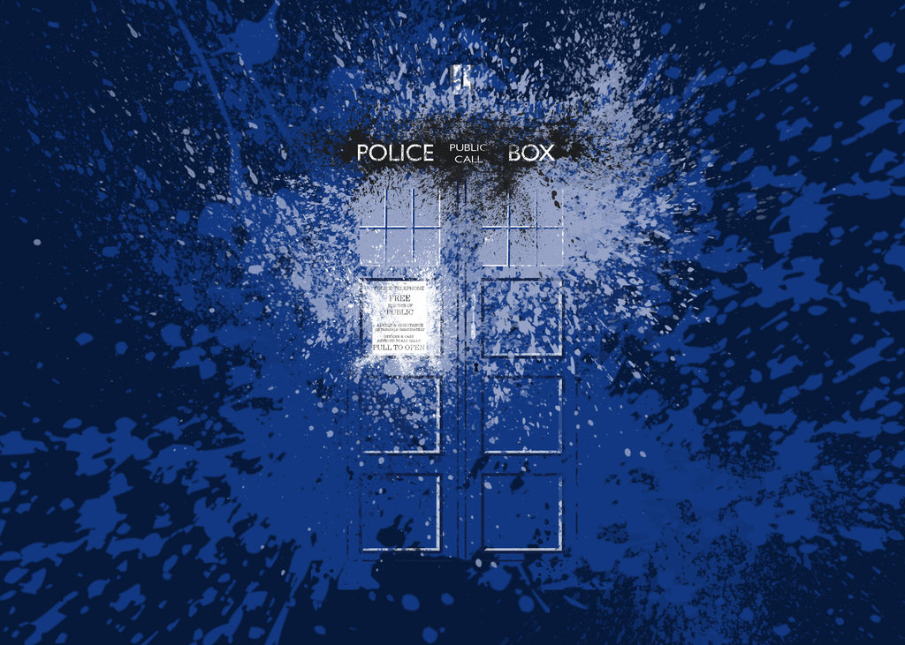

The TARDIS is dimensionally transcendental, meaning it is bigger on the inside than the outside.
The interior exists in a different, relative dimension to the exterior.
In the very first story it was established that the TARDIS usually changes its exterior appearance on each trip to blend in with its surroundings.
The Doctor later stated that it was the broken chameleon circuit that caused it to be stuck in the shape of an old style police box.
*TARDIS*
